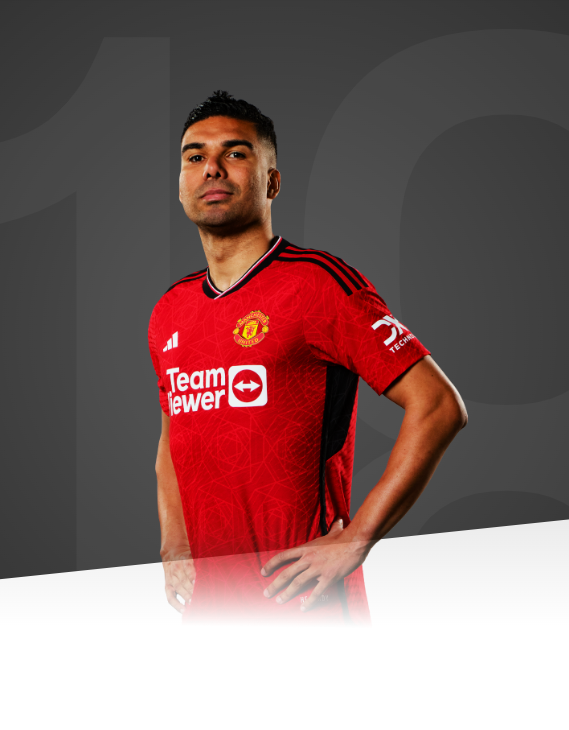

“To represent United is an honour and I am ready to give everything to help the team achieve our ambitions.”

AGE
31
APPEARANCES
62
CLEAN SHEETS
11
BIOGRAPHY
Casemiro arrives at Old Trafford as one of the most respected and decorated midfielders of his generation, after forging his reputation with the great Real Madrid sides of the 2010s.
A Brazil international and a five-time Champions League winner, he rocks up to M16 with an elite winning mentality in tow, plus some of the keenest defensive midfield skills around. Aggressive and imposing, his thirst for interceptions, tackles and breaking up play have been lighting up the Bernabeu for years, and the club honoured him with the farewell message: 'Thank you, legend.'
His football story began in the Sao Paulo youth system in 2002, and he made his professional breakthrough eight years later, in a game against Santos.
He quickly impressed, winning the Copa Sudamericana in 2012, and earned a loan move to Real Madrid in January 2013. After initially appearing in the B team, he started his first La Liga game in April of that year, completing the entirety of a 3-1 win over Real Betis. In May 2014, he saw his team lift the Champions League - a success he had contributed towards with six appearances.
Casemiro was loaned out to Porto for the 2014/15 season, and a year in Portugal brought regular football and Champions League experience. Upon returning to Madrid, he swiftly began to enmesh himself in the first team.
Zinedine Zidane's arrival as manager in January 2016 signalled a turning point for the Brazilian: he featured in 11 Champions League games as Real Madrid claimed their 11th triumph in the competition, and played all 120 minutes of a dramatic penalty shootout win over neighbours Atletico Madrid.
The following season brought more success: the Bernabeu club retained their Champions League crown and also lifted the UEFA Super Cup, with Casemiro scoring in both finals - against Juventus and United, respectively. That was the year he first lifted the Spanish title too, with 25 appearances. He was rapidly growing in stature, alongside majestic midfield partners Luka Modric and Toni Kroos.
In 2017/18, he was instrumental as Real Madrid claimed a record-equalling third consecutive Champions League success - a run of dominance unequalled since the competition's restructure in 1992.
Another Champions League title arrived in 2021/22, thanks to a memorable 1-0 win over Liverpool in Paris, and Casemiro also helped to earn his third La Liga title. Just weeks before he sealed his move to United, he was named Man of the Match in Real's 2-0 UEFA Super Cup win over Eintracht Frankfurt.
Beyond his glittering successes at club level, Casemiro has also long enjoyed an important role within the Brazilian national team. He was part of the Selecao's Under-17 and Under-20 teams, before making his senior bow in a 0-0 draw with Argentina in 2011, aged 19.
He was selected for the 2018 World Cup finals in Russia and was part of the team that achieved success in the 2019 Copa America, by beating Chile 3-1 in Rio
His move to United was completed on 22 August 2022, and at still only 30, the midfielder's steel and wealth of experience can grace Old Trafford for years to come. He made his debut as a substitute in the win at Southampton and quickly became an indispensable presence in midfield, winning the club's Player of the Month prize twice, in October and May.
Renowned primarily for his defensive midfield work, Casemiro enjoyed his joint-best club scoring season in 2022/23, netting seven goals including the opener in our Carabao Cup final victory over Newcastle United at Wembley.